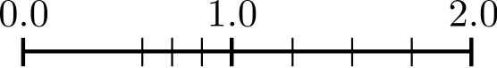

Computational Programming with Python
Lecture 3: String Formatting, other Container Types and Floating Point Numbers
Center for Mathematical Sciences, Lund University
Lecturer: Malin Christersson, Robert Klöfkorn
This lecture
- Training exercises
- String formatting
- Dictionaries
- Sets
- Tuples
- Container conversions
- Floating point numbers
Basic string formatting
Book p. 43
- Using keywords:
- Using positional arguments:
f-strings
An elegant alternative in modern Python is the use of f-strings.
To enable this interpretation of the text enclosed in {...} the string has to prefixed by the letter f.
Old string formatting
- for strings
- for integers
- for floats
See for example C function printf for explanation of formatting characters.
Formatting numbers using f-strings
We can right-align numbers at some position which is written after a colon.
Alignment and decimals
We can add .2fto show two decimals:
Decimals and scientific notation
More examples
Dictionaries
A dictionary is an unordered structure of key:value pairs. It is similar to a list but the objects are accessed by keys instead of index.
One indicates dictionaries by curly brackets:
Adding and deleting
Note: The keys must be unique.
Datatypes of keys
Any immutable (unchangable) object can be used as a key, e.g. strings, numbers, Booleans, etc are fine, but not lists.
Looping through dictionaries
A dictionary is an object with the following useful methods: keys, items, values.
By default a dictionary is considered as a list of keys:
Dictionaries in this course
Dictionaries are mainly used for
- providing functions with argument in a compact way (Lecture 4)
- to collect options of a method:
{'tol':1.e-3, 'step':0.1, 'maxit':1000}
Sets
Sets are containers which mimic sets in their mathematical sense:
Definition:
A set is a collection of well defined and distinct objects, considered as an object in its own right. (Wikipedia)
The most important operation is in, meaning \(\in\) (is element of):
Operations on Sets
- \(A \cap B\) ‐ method
intersection - \(A \cup B\) ‐ method
union - \(A/B\), relative complement ‐ subtract operation
No duplicate elements
“…distinct objects…” (see mathematical definition)
This is reflected in Python by
Tuples
Definition
A tuple is an immutable list. Immutable means that it cannot be modified.
Example
Packing and unpacking
One may assign several variables at once by unpacking a list or a tuple:
a, b = 0, 1 # a gets value 0 and b gets value 1
a, b = [0, 1] # exactly the same
(a, b) = 0, 1 # same
[a, b] = [0, 1] # sameThe swapping trick!
a, b = b, aA final word on tuples
- Tuples are nothing else than immutable lists
- In most cases lists may be used instead of tuples
- The parentheses free notation is nice but dangerous, you should use parenthesis when you’re not sure:
a, b = b, a # the swap trick, equivalent to
(a, b) = (b, a)
# but:Container conversions
| From | To | Command |
|---|---|---|
| List | Tuple | tuple([1, 2, 3]) |
| Tuple | List | list((1, 2, 3)) |
| List, Tuple | Set | set([1,2,3]), set((1,2,3)) |
| Set | List | list({1, 2, 3}) |
| Dictionary | List | {'a':4}.values() |
| List | Dictionary | - |
Summary and overview
| Type | Access | Order | Duplicate values | Mutability |
|---|---|---|---|---|
| List | index | yes | yes | yes |
| Tuple | index | yes | yes | no |
| Dictionary | key | no | yes | yes |
| Set | no | no | no | yes |
What are Floating Point Numbers?
Floating point numbers – The number e
The number \(e\) can be defined as
\[e = e^1 = \exp(1) = \lim_{n\to\infty} \Big ( 1 + \frac{1}{n} \Big )^n.\]
How to create a Floating Point Number?
- By typing it:
- As a result from a computation
Comparing floating point numbers
Operations on floating point numbers rarely return the exact result:
This fact matters when comparing floating point numbers:
Never compare floats using ==. Ask instead if they are near:
Example for internal representation (simplified)
Roughly speaking, a floating-point number is represented by a fixed number of significant digits (the significand) and scaled using an exponent in some fixed base.
The base for the scaling is normally \(2\), \(10\) or \(16\).
A number that can be represented exactly is of the following form:
\[ \mbox{significand} \times \mbox{base}^{\mbox{exponent}},\] where significand, base and exponent are integers (which have a simple representation).
Note: The significand is also called mantissa.
Example:
\[1.2345 = \underbrace{12345}_{\mbox{significand}} \times \underbrace{10\phantom{x}}_{\mbox{base}}^{\overbrace{\phantom{x}-4}^{\phantom{xxxxxxxxxx}\mbox{exponent}}}\]
Internal representation
Floats are represented by three quantities: The sign, the significand (or mantissa) and the exponent: \[ \text{sign}(x) \left( x_0 + x_1 \beta^{-1} + \dots + x_{t-1} \beta^{-(t-1)} \right) \beta^k, \quad \beta \in \mathbb{N}, \quad x_0 \neq 0, \quad 0 \leq x_i < \beta. \]
- \(x_0, \dots, x_{t-1}\) is the significand,
- \(t\) is the length of the significand,
- \(\beta\) is the basis,
- \(k\) is the exponent with \(|k| \leq k_{max}\).
Normalization \(x_0 \neq 0\) makes the representation unique (and saves one bit in the case \(\beta = 2\) and allows to add \(x_t \beta^{-t}\)).
On your computer for a normal float (double): - \(\beta = 2\), - \(t = 52\), - \(k_{max} = 1023\) (which needs 10 bits).
Together with the sign and the full range (sign) of the exponent, this requires 64 bits.
Internal representation (cont.)
We then have the following representation (adding \(x_t \beta^{-t}\) because \(x_0\) is fixed): \[ (-1)^{\text{sign}} \left( \underbrace{1}_{= x_0} + \sum_{i=1}^{t} x_i 2^{-i}\right) 2^k, \quad x_i \in \{0,1\}. \]
\(0\) cannot be represented as a normalized float.
Two zeroes: All the exponent bits \(0\) with all significand bits \(0\) represents \(0\). If sign bit is \(0\), then we have \(0\), else \(-0\).
Infinity: All the exponent bits \(1\) with all significand bits \(0\) represents infinity.
Denormalized number: All the exponent bits \(0\) and significand bits non-zero represents denormalized number.
Error: All the exponent bits \(1\) and significand bits non-zero represents error or nan (Not a Number).
Precision – Machine epsilon
Definition (Maching epsilon):
The machine epsilon or rounding unit is the gap between \(1.0\) and the next larger floating point number, i.e. the largest number \(\epsilon\) such that \[ \mathrm{float}(1.0 + \epsilon) = 1.0 \]
Challenge: Write a program which finds this number (or a good estimate for it).
See also
What precision do I have at what number
What decimal precision do I have at a given number \(a \in \mathbb{R}\)?
To figure out the precision we have at a number, we find the interval such that \(a \in [2^k, 2^{k+1})\). We then subdivide that range using the significand bits.
Example: \(3.5 \in [2,4)\). A float in Python has 52 bits of significand, so the precision we have at 3.5 is:
\[(4-2) 2^{-52} = \frac{2}{4503599627370496} \approx 0.00000000000000044408921\]
\(3.5\) itself is actually exactly representable by a float, but the amount of precision numbers we have at that scale is that value. The smallest number you can add or subtract to a value between \(2\) and \(4\) is that value. That is the resolution of the values you are working with when working between \(2\) and \(4\) using a float.
- What decimal precision do I have at \(13689.0\)?
- What is the largest possible floating point number in this double precision representation?
- What is the smallest gap between floating point numbers around zero?
5min, let’s go!
Internal representation (cont.)
The smallest positive representable number is \[ \mathrm{fl_{min}} = 1 \cdot 2^{-1023} \approx 10^{-308} \] and the largest is \[ \mathrm{fl_{max}} = 1.111 \dots 1 \cdot 2^{1023} \approx 10^{308}. \]
Floating point numbers are not equally spaced in \([0, \mathrm{fl_{max}}]\).
Gap at zero (caused by normalization \(x_0 \neq 0\)):
Distance between \(0\) and the first positive number is \(2^{-1023}\).
Distance between the first and the second is smaller by a factor \(2^{-52}\).

Infinite and Not a Number
There are in total \(2(\beta-1)\beta^{t-1}(2k_{max} + 1) + 1\) floating point numbers, in short floating point numbers are limited.
Numbers bigger than the maximal floating point number \(\mathrm{fl_{max}}\) generate in numpy an inf or an overflow exception.
Numbers smaller than the minimal floating point number \(\mathrm{fl_{min}}\) generate subnormalized numbers or not a number, short nan. This leads to unexpected behavior.
The float inf behaves much more as expected: